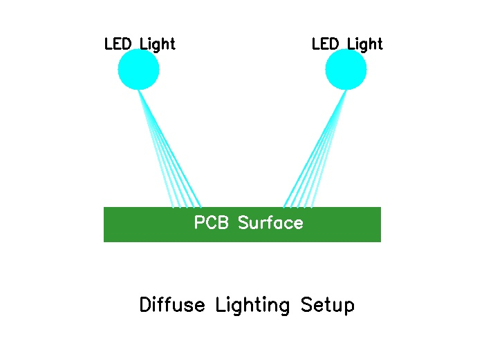

Camera Setup
RGB imaging and lighting requirements for effective PCB defect detection
RGB Imaging Requirements
For effective PCB defect detection using classical computer vision methods, proper camera setup is crucial. The main requirements are:
Camera Specifications
- Resolution: Minimum 5 megapixels for micro-crack detection
- Color Space: RGB imaging for color segmentation techniques
- Frame Rate: 30+ FPS for real-time inspection
- Lens: Macro lens for close-up trace inspection
Figure 6: Typical camera setup for PCB inspection showing RGB imaging configuration. Source: Manufacturing inspection guidelines.
Lighting Requirements
Lighting is critical for classical computer vision methods because they are sensitive to lighting variations. Proper lighting setup includes:
Lighting Specifications
- Uniform Illumination: Even lighting across entire PCB surface
- Color Temperature: Consistent white light (5000-6500K)
- Intensity: Sufficient brightness without overexposure
- Direction: Diffuse lighting to minimize shadows
Lighting Challenges
The main problem with classical methods is their sensitivity to lighting changes. Even small variations in illumination can cause false alarms or missed defects. This is why proper lighting setup is essential for reliable detection.
Figure 7: Lighting setup showing diffuse illumination to minimize shadows and reflections. Source: Industrial inspection standards.
Hardware Components
A complete PCB inspection system requires several hardware components:
Essential Components
- RGB Camera: High-resolution color camera
- Lighting System: LED ring lights or panel lights
- Mounting System: Stable camera positioning
- Processing Unit: Computer for OpenCV processing
- Calibration Target: For geometric calibration
# Camera calibration for PCB inspection
import cv2
import numpy as np
def calibrate_camera(images):
"""Calibrate camera for PCB inspection"""
# Define calibration pattern
pattern_size = (9, 6)
criteria = (cv2.TERM_CRITERIA_EPS + cv2.TERM_CRITERIA_MAX_ITER, 30, 0.001)
# Prepare object points
objp = np.zeros((pattern_size[0] * pattern_size[1], 3), np.float32)
objp[:, :2] = np.mgrid[0:pattern_size[0], 0:pattern_size[1]].T.reshape(-1, 2)
# Find calibration points
objpoints = []
imgpoints = []
for img in images:
gray = cv2.cvtColor(img, cv2.COLOR_BGR2GRAY)
ret, corners = cv2.findChessboardCorners(gray, pattern_size, None)
if ret:
objpoints.append(objp)
corners2 = cv2.cornerSubPix(gray, corners, (11, 11), (-1, -1), criteria)
imgpoints.append(corners2)
# Calibrate camera
ret, mtx, dist, rvecs, tvecs = cv2.calibrateCamera(objpoints, imgpoints, gray.shape[::-1], None, None)
return mtx, distSystem Limitations
Understanding the limitations of the camera setup is important for realistic expectations:
Hardware Limitations
- Resolution Limits: Cannot detect defects smaller than pixel size
- Lighting Sensitivity: Requires controlled lighting conditions
- Alignment Requirements: Precise camera positioning needed
- Processing Speed: Real-time processing depends on hardware
Environmental Constraints
- Temperature: Thermal expansion affects measurements
- Vibration: Mechanical stability required
- Dust: Clean environment for accurate detection
- Power: Stable power supply for consistent lighting